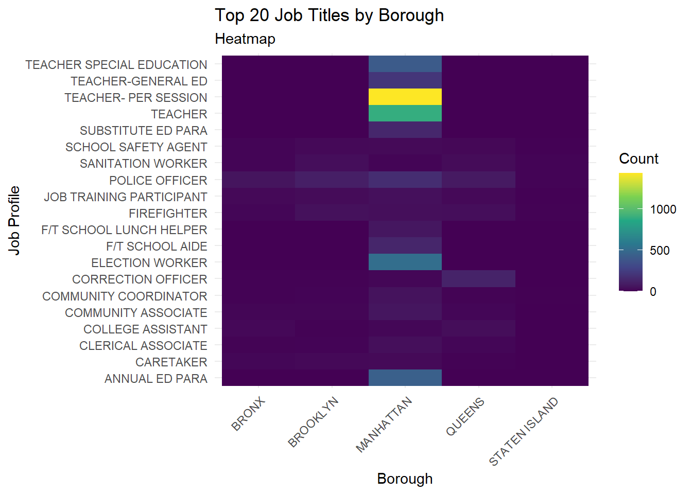

Code
library(redav)
library(ggplot2)
library(ggridges)
library(dplyr)
library(ggalluvial)
library(tidyverse)
library(tidyr)
library(RColorBrewer)
library(forcats)library(redav)
library(ggplot2)
library(ggridges)
library(dplyr)
library(ggalluvial)
library(tidyverse)
library(tidyr)
library(RColorBrewer)
library(forcats)clean_nyc_payroll <- read.csv("./Data/cleaned_nyc_payroll.csv")payroll_no_outliers <- clean_nyc_payroll %>%
filter(between(Daily.Salary, quantile(Daily.Salary, 0.25) - 1.5 * IQR(Daily.Salary), quantile(Daily.Salary, 0.75) + 1.5 * IQR(Daily.Salary)))
# write.csv(payroll_no_outliers, "./Data/d3_data.csv", row.names = FALSE)
medians <- payroll_no_outliers %>%
group_by(Work.Location.Borough) %>%
summarize(MedianSalary = median(Daily.Salary))
payroll_no_outliers <- left_join(payroll_no_outliers, medians, by = "Work.Location.Borough")
ggplot(data = payroll_no_outliers, alpha = 0.1) +
geom_density_ridges(
mapping = aes(
x = Daily.Salary,
y = reorder(Work.Location.Borough, MedianSalary),
fill = reorder(Work.Location.Borough, MedianSalary),
scale = 0.8
),
show.legend = FALSE,
alpha = 0.81
) +
geom_boxplot(
mapping = aes(
x = Daily.Salary,
y = reorder(Work.Location.Borough, MedianSalary),
fill = reorder(Work.Location.Borough, MedianSalary)
),
show.legend = FALSE,
alpha = 0.81,
lwd = 0.36,
width = 0.3
) +
labs(
title = "Distribution of Daily Pay by Borough",
subtitle = "Using Both Boxplots & Ridgeline Plots",
x = "Daily Salary",
y = "Borough"
) +
scale_x_continuous(
breaks = seq(0, 600, by = 50),
limits = c(0, 600)
) +
theme_bw() +
scale_fill_brewer(palette = "GnBu")Picking joint bandwidth of 23.5table(clean_nyc_payroll$Leave.Status.as.of.June.30)
ACTIVE CEASED ON LEAVE ON SEPARATION LEAVE
7460 1208 98 17
SEASONAL
73 alluvial_data <- clean_nyc_payroll |> filter(Leave.Status.as.of.June.30 %in% c("ACTIVE", "CEASED")) |>
count(Work.Location.Borough, Pay.Basis, Leave.Status.as.of.June.30) |>
rename(axis1 = Work.Location.Borough, axis2 = Pay.Basis, axis3 = Leave.Status.as.of.June.30, Freq = n)
ordered_levels <- alluvial_data %>%
group_by(axis1) %>%
summarize(total_count = sum(Freq)) %>%
arrange(total_count) %>%
pull(axis1)
alluvial_data$axis1 <- factor(alluvial_data$axis1, levels = rev(ordered_levels))
ggplot(alluvial_data,
aes(axis1 = axis1, axis2 = axis2, axis3 = axis3, y = Freq)) +
geom_alluvium(aes(fill = axis1)) +
geom_stratum() +
geom_text(stat = "stratum", aes(label = paste(after_stat(stratum), "\n", after_stat(count))),
size = 1.8, vjust = 0.7) +
scale_x_discrete(limits = c("Boroughs", "Pay Basis", "Leave Status")) +
labs(title = "Variation of Leave Staus and Pay Basis by Boroughs",
subtitle = "Using Alluvial Plots",
x = "Variable Being Assessed",
y = "Frequency",
fill = "Boroughs"
)payroll_breakdown <- clean_nyc_payroll %>%
filter(Total.Other.Pay > 0, Total.OT.Paid > 0, OT.Hours > 0) %>%
mutate(Hourly.Salary = Daily.Salary / 24,
Hourly.OT = Total.OT.Paid / OT.Hours) %>%
filter(between(Total.Other.Pay, quantile(Total.Other.Pay, 0.25) - 1.5 * IQR(Total.Other.Pay), quantile(Total.Other.Pay, 0.75) + 1.5 * IQR(Total.Other.Pay)),
between(Hourly.Salary, quantile(Hourly.Salary, 0.25) - 1.5 * IQR(Hourly.Salary), quantile(Hourly.Salary, 0.75) + 1.5 * IQR(Hourly.Salary)),
between(Hourly.OT, quantile(Hourly.OT, 0.25) - 1.5 * IQR(Hourly.OT), quantile(Hourly.OT, 0.75) + 1.5 * IQR(Hourly.OT))) |>
mutate(Hourly.Salary = (Hourly.Salary - min(Hourly.Salary)) / (max(Hourly.Salary) - min(Hourly.Salary)),
Hourly.OT = (Hourly.OT - min(Hourly.OT)) / (max(Hourly.OT) - min(Hourly.OT)),
Total.Other.Pay = (Total.Other.Pay - min(Total.Other.Pay)) / (max(Total.Other.Pay) - min(Total.Other.Pay)))
payroll_long <- payroll_breakdown %>%
pivot_longer(cols = c(Hourly.Salary, Hourly.OT, Total.Other.Pay),
names_to = "Pay.Type",
values_to = "Amount")
ggplot(payroll_long, aes(x = Work.Location.Borough, y = Amount, fill = Pay.Type)) +
geom_bar(position = "dodge", stat = "identity") +
labs(title = "Comparison of Hourly Salary, Hourly OT, and Total Other Pay by Location",
x = "Location",
y = "Amount") +
scale_fill_brewer(palette = "Set2") +
theme_bw()# TO BE SORTEDDDD
# TO BE SORTEDDDD
# TO BE SORTEDDDD
# TO BE SORTEDDDD
# TO BE SORTEDDDDclean_nyc_payroll$Work.Location.Borough <-factor(clean_nyc_payroll$Work.Location.Borough)
ggplot(clean_nyc_payroll, aes(x = fct_infreq(Work.Location.Borough))) +
geom_bar(fill = "cornflowerblue") +
theme_minimal() +
labs(title = "Distribution of Work place location",
subtitle = "Bar Plot",
x = "Borough",
y = "Number of Workers")library(dplyr)
library(ggplot2)
# Assuming clean_nyc_payroll is your dataset
agency_counts <- clean_nyc_payroll %>%
count(Agency.Name) %>%
arrange(desc(n))
# Select the top 20 agencies
top_agencies <- head(agency_counts, 25)
# Create a category variable based on the count
top_agencies$category <- cut(top_agencies$n,
breaks = c(0, 150, Inf),
labels = c("0-150", "150-2000"),
include.lowest = TRUE)
# Create the plot
ggplot(top_agencies, aes(x = reorder(Agency.Name, n), y = n)) +
geom_segment(aes(xend = Agency.Name, yend = 0), color = "skyblue") +
geom_point(color = "blue", size = 3) +
facet_wrap(~category, scales = "free", ncol =1)+
coord_flip() +
labs(title = "Number of Workers in Top 20 Agencies by Category",
subtitle = "Faceted Cleveland Plot",
y = "Number of Workers",
x = "Agency") +
theme_bw()
library(ggplot2)
library(viridis)Loading required package: viridisLitelibrary(dplyr)
library(tidyr)
library(readr)
title_counts <- clean_nyc_payroll %>%
count(Title.Description, Work.Location.Borough)
top_titles <- title_counts %>%
group_by(Title.Description) %>%
summarise(Total = sum(n)) %>%
top_n(20, Total) %>%
pull(Title.Description)
filtered_title_counts <- title_counts %>%
filter(Title.Description %in% top_titles)
wide_data <- filtered_title_counts %>%
pivot_wider(names_from = Work.Location.Borough, values_from = n, values_fill = list(n = 0))
long_data <- wide_data %>%
pivot_longer(cols = - Title.Description, names_to = "Borough", values_to = "Count")
ggplot(long_data, aes(x = Borough, y = Title.Description, fill = Count)) +
geom_tile() +
scale_fill_viridis_c() +
theme_minimal() +
theme(axis.text.x = element_text(angle = 45, hjust = 1)) +
labs(title = "Top 20 Job Titles by Borough",
subtitle = "Heatmap",
x = "Borough",
y = "Job Profile")
library(GGally)Warning: package 'GGally' was built under R version 4.3.2Registered S3 method overwritten by 'GGally':
method from
+.gg ggplot2library(dplyr)
library(plotly)Warning: package 'plotly' was built under R version 4.3.2
Attaching package: 'plotly'The following object is masked from 'package:ggplot2':
last_plotThe following object is masked from 'package:stats':
filterThe following object is masked from 'package:graphics':
layout# Calculate total years of experience
clean_nyc_payroll$Total.Years.of.Experience <- clean_nyc_payroll$Fiscal.Year - as.numeric(format(as.Date(clean_nyc_payroll$Agency.Start.Date, "%m/%d/%Y"), "%Y"))
clean_nyc_payroll$Work.Location.Borough <- as.factor(clean_nyc_payroll$Work.Location.Borough)
# Filter data
filtered_data <- clean_nyc_payroll %>%
filter(OT.Hours < 1500, Total.OT.Paid > 0, Daily.Salary < 1000)
p <- ggparcoord(filtered_data,
columns = c( 19, 18, 15:16 ),
groupColumn = "Work.Location.Borough",
alphaLines = 0.5,
showPoints = TRUE) +
theme_minimal() +
labs(title = "Overtime compensation compared to Daily Salary and Work Experience",
subtitle = "Interactive Parallel Plot ",
x = "Variables",
y = "Scaled Values")
plotly_plot <- ggplotly(p)
plotly_plotlibrary(ggplot2)
# Assuming clean_nyc_payroll is your dataset
# Define a threshold for outliers (e.g., 1.5 standard deviations from the mean)
salary_sd <- 1.5 * sd(clean_nyc_payroll$Base.Salary, na.rm = TRUE)
ot_sd <- 1.5 * sd(clean_nyc_payroll$Total.OT.Paid, na.rm = TRUE)
salary_mean <- mean(clean_nyc_payroll$Base.Salary, na.rm = TRUE)
ot_mean <- mean(clean_nyc_payroll$Total.OT.Paid, na.rm = TRUE)
min_salary_threshold <- 10000
min_ot_paid <- 1000
nyc_payroll_filtered <- clean_nyc_payroll[abs(clean_nyc_payroll$Base.Salary - salary_mean) < salary_sd &
abs(clean_nyc_payroll$Total.OT.Paid - ot_mean) < ot_sd &
clean_nyc_payroll$Base.Salary > min_salary_threshold &
clean_nyc_payroll$Total.OT.Paid > min_ot_paid, ]
# Create a new variable for color based on Base Salary being below or above $70,000
nyc_payroll_filtered$Salary.Color <- ifelse(nyc_payroll_filtered$Base.Salary < 70000, "green", "red")
# Create the scatter plot with filtered data and colored points
ggplot(nyc_payroll_filtered, aes(x = Base.Salary, y = Total.OT.Paid, color = Salary.Color)) +
geom_point() +
labs(title = "Scatter Plot of Base Salary vs. Total OT Paid (Without Outliers)",
x = "Base Salary",
y = "Total OT Paid") +
scale_color_identity() + # Use the actual colors specified in Salary.Color
theme_minimal()